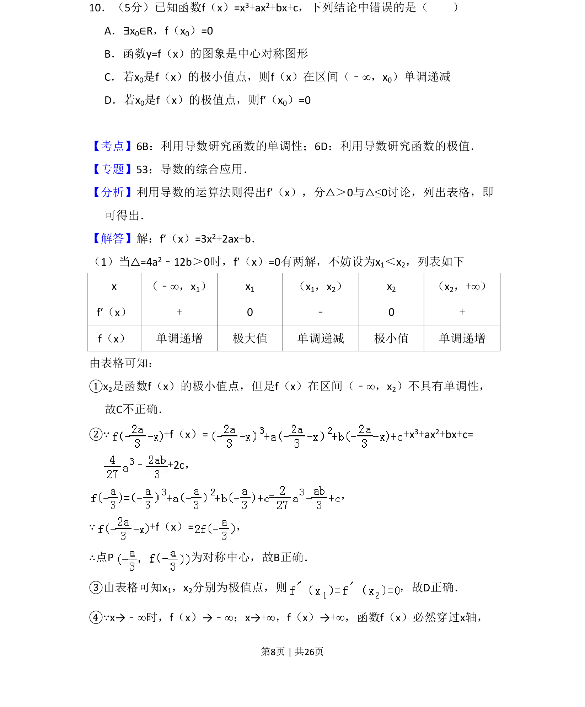
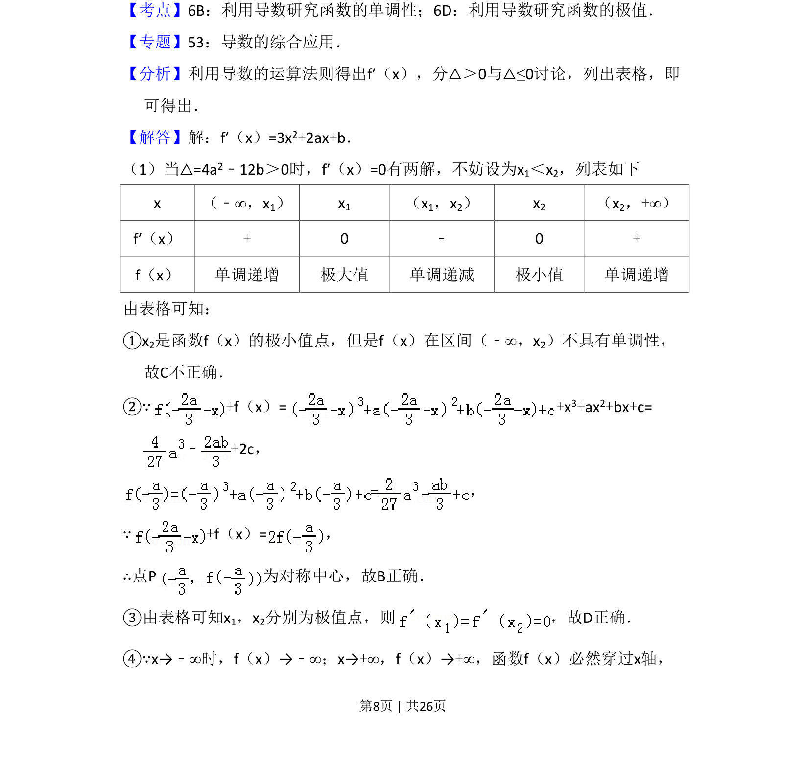
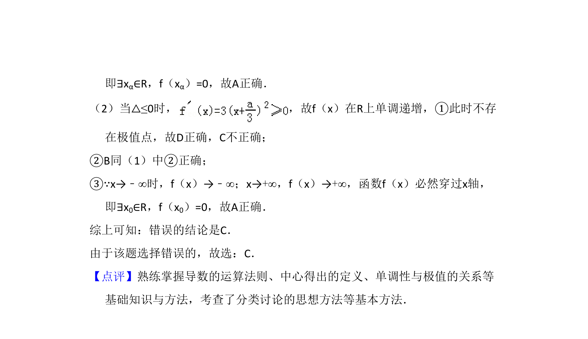

考点：函数的极值点 利用导数研究函数的单调性 三次函数的对称性

该题以三次函数为载体，考查极值点的性质、单调性及函数图像的对称性等综合知识。


📄 原 PDF 第 8 页：
素材/真题/吉林/2008-2024·（吉林）数学高考真题/2013年高考数学试卷（理）（新课标Ⅱ）（解析卷）.pdf
10．（5分）已知函数f（x）=x3+ax2+bx+c，下列结论中错误的是（ ） A．∃x0∈R，f（x0）=0 B．函数y=f（x）的图象是中心对称图形 C．若x0是f（x）的极小值点，则f（x）在区间（﹣∞，x0）单调递减 D．若x0是f（x）的极值点，则f′（x0）=0
【考点】6B：利用导数研究函数的单调性；6D：利用导数研究函数的极值．菁优网版权所有 【专题】53：导数的综合应用． 【分析】利用导数的运算法则得出f′（x），分△＞0与△≤0讨论，列出表格，即 可得出． 【解答】解：f′（x）=3x2+2ax+b． （1）当△=4a2﹣12b＞0时，f′（x）=0有两解，不妨设为x1＜x2，列表如下 x （﹣∞，x1） x1 （x1，x2） x2 （x2，+∞） f′（x） + 0 ﹣ 0 + f（x） 单调递增 极大值 单调递减 极小值 单调递增 由表格可知： ①x2是函数f（x）的极小值点，但是f（x）在区间（﹣∞，x2）不具有单调性， 故C不正确． ②∵+f（x）=+x 3+ax2+bx+c= ﹣+2c， =， ∵+f（x）=， ∴点P为对称中心，故B正确． ③由表格可知x1，x2分别为极值点，则 ，故D正确． ④∵x→﹣∞时，f（x）→﹣∞；x→+∞，f（x）→+∞，函数f（x）必然穿过x轴，